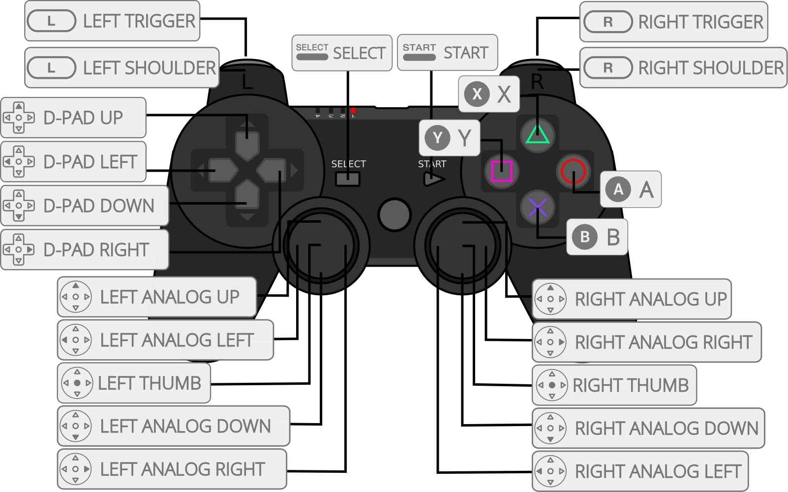
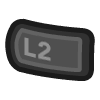

PUAE¶
Background¶
PUAE tries to continue where E-UAE left off. PUAE versioning is based on the merged WinUAE version.
E-UAE is an Amiga emulator, a program that allows you to run software
designed for Amiga computers on other platforms, such as Linux or Mac
OS. It is based on UAE, the original Ubiquitous Amiga Emulator, and
WinUAE, the Windows version of UAE. While it owes a huge debt to these
two great projects, E-UAE diverges from both, aiming to improve
performance and features on a variety of host platforms.
The PUAE core have been authored by
- UAE Team
The PUAE core is licensed under
A summary of the licenses behind RetroArch and its cores can be found here.
Extensions¶
Content that can be loaded by the PUAE core have the following file extensions:
Floppies¶
- .adf
- .adz
- .dms
- .fdi
- .ipf
Hard drives¶
- .hdf
- .hdz
- directory
WHDLoad¶
- .lha
- .slave
- .info
Compact discs¶
- .cue
- .ccd
- .nrg
- .mds
- .iso
Other¶
- .uae
- .m3u
- .zip
- .7z
Databases¶
RetroArch database(s) that are associated with the PUAE core:
BIOS¶
Required or optional firmware files go in the frontend's system directory.
The core has a built-in AROS fallback Kickstart, which is used when the real Kickstart is not found. It can be compatible enough for some A500 games.
Amiga Forever BIOS files must be renamed accordingly.
| Filename | Description | md5sum |
|---|---|---|
| kick33180.A500 | Kickstart v1.2 rev 33.180 (!) | 85ad74194e87c08904327de1a9443b7a |
| kick34005.A500 | Kickstart v1.3 rev 34.005 | 82a21c1890cae844b3df741f2762d48d |
| kick37175.A500 | Kickstart v2.04 rev 37.175 | dc10d7bdd1b6f450773dfb558477c230 |
| kick40063.A600 | Kickstart v3.1 rev 40.063 | e40a5dfb3d017ba8779faba30cbd1c8e |
| kick40068.A1200 | Kickstart v3.1 rev 40.068 | 646773759326fbac3b2311fd8c8793ee |
| kick40068.A4000 | Kickstart v3.1 rev 40.068 | 9bdedde6a4f33555b4a270c8ca53297d |
| kick34005.CDTV | CDTV extended ROM v1.00 | 89da1838a24460e4b93f4f0c5d92d48d |
| kick40060.CD32 | CD32 Kickstart v3.1 rev 40.060 | 5f8924d013dd57a89cf349f4cdedc6b1 |
| kick40060.CD32.ext | CD32 extended ROM rev 40.060 | bb72565701b1b6faece07d68ea5da639 |
| kick40060.CD32 | CD32 KS + extended v3.1 rev 40.060 | f2f241bf094168cfb9e7805dc2856433 |
- (!) Kickstart v1.2 only required for WHDLoad Arcadia games
Features¶
Frontend-level settings or features that the PUAE core respect.
| Feature | Supported |
|---|---|
| Restart | |
| Screenshots | |
| Saves | |
| States | |
| Rewind | |
| Netplay | |
| Core Options | |
| RetroAchievements | |
| RetroArch Cheats | |
| Native Cheats | |
| Controls | |
| Remapping | |
| Multi-Mouse | |
| Rumble | |
| Sensors | |
| Camera | |
| Location | |
| Subsystem | |
| Softpatching | |
| Disk Control | |
| Username | |
| Language | |
| Crop Overscan | |
| LEDs |
Directories¶
The PUAE core's internal core name is 'puae'.
The PUAE core saves/loads to/from these directories.
Frontend's Save directory
- 'content-name'.nvr (CD32/CDTV NvRAM)
puae_libretro.uae(Temporary startup configuration)BootHD/puae_libretro.hdf(Optional global boot hard drive image directory/file)WHDLoad/WHDLoad.hdf(WHDLoad helper image directory/file)WHDSaves/WHDSaves.hdf(WHDLoad save image directory/file)
Frontend's State directory
- 'content-name'.state# (State)
Geometry and timing¶
- The PUAE core's core provided FPS is dynamic, but initially 49.9201277955271580 for PAL and 59.8250950570342180 for NTSC
- The PUAE core's core provided sample rate is 44100 Hz
- The PUAE core's base width is 360 in LoRes, 720 in HiRes 1440 in SuperHires
- The PUAE core's base height is 288 for PAL single line, 576 for PAL double line, 240 for NTSC single line, 480 for NTSC double line
- The PUAE core's max width is 1440
- The PUAE core's max height is 576
- The PUAE core's core provided aspect ratio is automatically set based on core options
M3U and Disk control¶
When you have a multi disk game, you can use a M3U playlist file to be able to change disks via RetroArch Disc Control interface.
A M3U file is a simple text file with one disk per line (Wikipedia).
Example:
Simpsons, The - Bart vs. The Space Mutants.m3u
Simpsons, The - Bart vs. The Space Mutants_Disk1.adf
Simpsons, The - Bart vs. The Space Mutants_Disk2.adf
Path can be absolute or relative to the location of the M3U file.
When the game asks for it, you can change the current disk in the RetroArch "Disc Control" menu:
- Eject the current disk with "Eject Disc"
- Select the right disk index with "Current Disc Index"
- Insert the new disk with "Insert Disc"
For games that support multiple disk drives, append "(MD)" as in "MultiDrive" to the M3U filename to insert each disk in different drives. Only possible with maximum 4 disks!
For games that require a dedicated save disk, one may be generated automatically by entering the following line in an M3U file: #SAVEDISK:VolumeName. VolumeName is optional and may be omitted. For example, this will create a blank, unlabelled disk image at disk index 5:
Secret of Monkey Island.m3u
Secret of Monkey Island_Disk 1.adf
Secret of Monkey Island_Disk 2.adf
Secret of Monkey Island_Disk 3.adf
Secret of Monkey Island_Disk 4.adf
#SAVEDISK:
Some games require save disks to have a specific label - for example, It Came from the Desert will only save to a disk named DSAVE:
It Came from the Desert.m3u
It Came from the Desert_Disk 1.adf
It Came from the Desert_Disk 2.adf
It Came from the Desert_Disk 3.adf
#SAVEDISK:DSAVE
Although one save disk is normally sufficient, an arbitrary number of #SAVEDISK:VolumeName lines may be included. Save disks are located in the frontend's save directory, with the following name: [M3U_FILE_NAME].save[DISK_INDEX].adf.
By default, RetroArch will display the filename (without extension) of each M3U entry when selecting a disk via the Current Disc Index drop-down menu. Custom display labels may be set for each disk using the syntax: DISK_FILE|DISK_LABEL. For example, the following M3U file:
Valhalla & the Fortress of Eve.m3u
Valhalla & the Fortress of Eve_Disk1.adf|Game Disk
Valhalla & the Fortress of Eve_Disk2.adf|Data Disk
Valhalla & the Fortress of Eve_Disk3.adf|Level 1 Disk
Valhalla & the Fortress of Eve_Disk4.adf|Level 2 Disk
Valhalla & the Fortress of Eve_Disk5.adf|Level 3 Disk
Valhalla & the Fortress of Eve_Disk6.adf|Level 4 Disk
...will be shown in RetroArch's disk selection menu as:
1: Game Disk
2: Data Disk
3: Level 1 Disk
4: Level 2 Disk
5: Level 3 Disk
6: Level 4 Disk
If DISK_LABEL is intentionally left blank (i.e. DISK_FILE|) then only the disk index will be displayed.
Save disks generated by the #SAVEDISK: keyword are automatically assigned the label: Save Disk [SAVE_DISK_INDEX].
Extra M3U features¶
#SAVEDISK:<label>- Create a save disk in
saves
- Create a save disk in
<disk>.adf|<label>- Set a friendly name (shown in "Disc Control")
<disks>.zip#<disk>.adf- Specify a disk inside a ZIP with multiple disks (not needed with single file ZIPs)
M3U playlist supports floppy disks and compact discs.
ZIP support¶
ZIPs are extracted to a temporary directory in saves, bypassing the default frontend extraction.
The temporary directory is emptied but not removed on exit. ZIP is not repacked, which means saves and highscores are lost.
This allows:
- Automatic M3U playlist generation of all files
- The use of zipped images in M3Us
- Hard drive images will be treated one by one and only the first file found is selected for launch
- If no disk/drive images are found, the ZIP will be treated as a directory
Floppy drive sounds¶
The core has embedded internal floppy drive samples. External sound samples have to be copied from https://github.com/libretro/libretro-uae/tree/master/sources/uae_data into a directory named uae_data or uae in RetroArch system directory.
IPF support¶
Most full-price commercial Amiga games had some form of custom disk format and/or copy protection. For this reason, most commercial Amiga games cannot be stored in ADF files unaltered, but there is an alternative called Interchangeable Preservation Format (IPF) which was specifically designed for this purpose.
IPF support is done through CAPSIMG library. To enable it you have to put the dynamic library called capsimg.dll (Windows) or capsimg.so (Linux, macOS) in RetroArch system or executable directory.
Compatible CAPSIMG libraries for Windows, macOS and Linux can be found at http://www.softpres.org/download and https://fs-uae.net/download#plugins
Compatible CAPSIMG libraries for Android can be found at https://github.com/rsn8887/capsimg/releases/latest
Please be aware that there are 32-bits and 64-bits versions of the library. Choose the one corresponding to your RetroArch executable.
Usage¶
Default controls¶
| RetroPad button | Action |
|---|---|
| D-Pad | Joystick |
| Left Analog | Mouse |
| Right Analog | Mouse |
| B | Fire button 1 / Red |
| A | Fire button 2 / Blue |
| X | Space |
| L2 | Left mouse button |
| R2 | Right mouse button |
| Select | Toggle virtual keyboard |
| Keyboard key | Action |
|---|---|
| F12 | Toggle statusbar |
| RControl | Switch between joystick/mouse |
Virtual keyboard¶
The PUAE core has a virtual keyboard that can be accessed by default through RetroPad Select.
The virtual keyboard can be controlled with:
-
RetroPad
Button Action D-Pad Move B Keypress A Toggle transparency Y Toggle CapsLock X Toggle position Start Press Return -
Keyboard
Key Action Cursors Move Enter Keypress CapsLock Toggle CapsLock -
Mouse
- Touch screen
The virtual keyboard has these additional actions:
J/M= Switch between joystick/mouseTRBF= Toggle turbo fireASPR= Toggle aspect ratioSTBR= Toggle statusbar- Reset (Red key with undo icon, soft reset = Ctrl-Amiga-Amiga)
- Mouse controls (Left+right button, up, down, left, right)
- Numpad key (Toggles numbers, arrows, Return etc. to numpad variants)
Long press for sticky keys. Stickying the third key will replace the second.
Joyport control¶
Some games use mouse instead of joystick. D-Pad can be switched between joystick and mouse control in several ways:
- Use the core option:
Quick Menu -> Options -> RetroPad Joystick/Mouse - Bring up the virtual keyboard with
Selectbutton, and press the key labeledJ/M - Press the default keyboard shortcut
Right Control - Assign
Switch Joystick/Mouseto any RetroPad button underQuick Menu -> Options
Model overriding¶
You can force a specific model if a game needs one (AGA games for instance) either by the "Model" core option or by file path tags.
The "Model" core option at "Automatic" will default to A500 when booting floppy disks, A600 when booting hard drives, and CD32 when booting CD images.
The whole path (filename and directory) will be searched for the following tags if the model is "Automatic":
| Floppy | HD/LHA | CD | String | Result |
|---|---|---|---|---|
| x | x | (A500OG), (512K) | Amiga 500 (0.5MB Chip RAM) | |
| x | x | (A500), OCS | Amiga 500 (0.5MB Chip RAM + 0.5MB Slow RAM) | |
| x | x | (A500+), (A500PLUS) | Amiga 500+ (1MB Chip RAM) | |
| x | x | (A600), ECS | Amiga 600 (2MB Chip RAM + 8MB Fast RAM) | |
| x | x | (A1200OG), (A1200NF) | Amiga 1200 (2MB Chip RAM) | |
| x | x | (A1200), AGA, CD32, AmigaCD | Amiga 1200 (2MB Chip RAM + 8MB Fast RAM) | |
| x | x | (A4030), (030) | Amiga 4000/030 (2MB Chip RAM + 8MB Fast RAM) | |
| x | x | (A4040), (040) | Amiga 4000/040 (2MB Chip RAM + 8MB Fast RAM) | |
| x | CDTV | Amiga CDTV (1MB Chip RAM) | ||
| x | (CD32), (CD32NF) | Amiga CD32 (2MB Chip RAM) | ||
| x | (CD32FR), FastRAM | Amiga CD32 (2MB Chip RAM + 8MB Fast RAM) | ||
| x | x | x | NTSC, (USA) | NTSC 60Hz |
| x | x | x | PAL, (Europe) (!) | PAL 50Hz |
| x | (MD) (!!) | Insert each disk in different drives | ||
| x | x | x | (CE) | Force CPU Cycle-exact |
- (!) Additional tags: (Denmark), (Finland), (France), (Germany), (Italy), (Spain), (Sweden)
- (!!) Maximum 4 disks
Example: When launching "Alien Breed 2 AGA.hdf" or "AGA/Alien Breed 2.hdf" the model will be Amiga 1200.
Note: CD32 and AmigaCD are a bit misleading, since they have nothing to do with actual CDs. They are for automatically selecting the appropriate model with certain WHDLoad slaves and AmigaCD-to-HDF conversions.
WHDLoad¶
Pre-installed WHDLoad LHA archives can be launched directly without any kind of manual preparing and downloading.
- WHDLoad helper files (Directory or HDF) will be generated to
saves,WHDLoad.prefswill be generated tosystem WHDLoad.prefs&WHDLoad.keywill be copied fromsystemto the helper image- Kickstarts will be copied automatically to the helper image
- To update
WHDLoad:simply delete the directory or the HDF
Overrides at startup¶
- (Red) Hold fire button for launch selector
- For alternate
.infolaunching
- For alternate
- (Red+Blue) Hold fire + 2nd fire for
ReadMe+MkCustom- For creating default
CUSTOMparameters
- For creating default
'WHDLoad Splash Screen' core option overrides¶
- (Blue) Hold 2nd fire for WHDLoad Config
- Waits for user input if the slave supports splash screen configurations
- (LMB) Hold left mouse button for WHDLoad Splash
- Briefly shows the splash screen while preloading (default WHDLoad behavior)
- (RMB) Hold right mouse button for WHDLoad Config+Splash
- Always waits for user input at the splash screen
For more detailed history of WHDLoad support visit the Github repository.
Using configuration files¶
You can pass an ".uae" configuration file and the core will load the settings and start emulation.
Look at the temporary configuration file puae_libretro.uae in RetroArch saves as a starting point for your own configuration files.
If the file puae_libretro_global.uae exists in RetroArch saves it will be appended to the temporary configuration file.
Note that the use of configuration files is no longer encouraged or necessary. The core has been modified to always use the core options as a base, so that all custom configurations will be appended to the created configuration, effectively overriding the core options. The problem with this is that changing any core option while the core is running will reset all duplicate configurations. Therefore only add configurations which will require a restart or do not exist in the core options, if you must use a custom uae. If there is an option missing that is a must have, please make an issue about it.
Example 1: You want to mount four non-RDB HDF files. You have one bootable 1000 MB file called System.hdf created with surfaces=1, and three non-bootable 2000 MB files called WHDGamesA.hdf, WHDGamesB.hdf, WHDGamesC.hdf created with surfaces=2. Your HDF files are located in the folder with absolute path /emuroms/amiga/hdf/. For that scenario, you should create a .uae text file with the following content:
hardfile=read-write,32,1,2,512,/emuroms/amiga/hdf/System.hdf
hardfile=read-write,32,2,2,512,/emuroms/amiga/hdf/WHDGamesA.hdf
hardfile=read-write,32,2,2,512,/emuroms/amiga/hdf/WHDGamesB.hdf
hardfile=read-write,32,2,2,512,/emuroms/amiga/hdf/WHDGamesC.hdf
Example 2: You want to mount a directory full of extracted data as a hard drive:
filesystem2=rw,DH0:data:/emuroms/amiga/,0
Windows tip:
- If paths are enclosed with quotes, Windows needs double backslashes:
filesystem2=rw,DH0:data:"c:\\emuroms\\amiga",0.
Linux tip:
- Leave the ending slash to the path to make sure UAE sees it as a directory.
If you are using RDB HDF files, please use 0,0,0,0 instead of geometry numbers like 32,1,2,512. The geometry will then be read from the file. This only works for RDB HDF files.
Core options¶
The PUAE core has the following option(s) that can be tweaked from the core options menu. The default setting is bolded.
Settings with (Restart) means that core has to be closed for the new setting to be applied on next launch.
-
Model [puae_model] (auto|A500OG|A500|A500PLUS|A600|A1200OG|A1200|A4030|A4040|CDTV|CD32|CD32FR)
'Automatic' switches region per file path tags.
Value Label A500OG A500 (512KB Chip) A500 A500 (512KB Chip + 512KB Slow) A500PLUS A500+ (1MB Chip) A600 A600 (2MB Chip + 8MB Fast) A1200OG A1200 (2MB Chip) A1200 A1200 (2MB Chip + 8MB Fast) A4030 A4000/030 (2MB Chip + 8MB Fast) A4040 A4000/040 (2MB Chip + 8MB Fast) CDTV CDTV (1MB Chip) CD32 CD32 (2MB Chip) CD32FR CD32 (2MB Chip + 8MB Fast) -
Show Automatic Model Options [puae_model_options_display] (disabled|enabled)
Shows/hides default model options (Floppy/HD/CD) for 'Automatic' model. Core options page refresh required.
-
Automatic Floppy [puae_model_fd] (A500OG|A500|A500PLUS|A600|A1200OG|A1200|A4030|A4040)
Default model when floppies are launched with 'Automatic' model. Core restart required.
-
Automatic HD [puae_model_hd] (A600|A1200OG|A1200|A4030|A4040)
Default model when HD interface is used with 'Automatic' model. Affects WHDLoad installs and other hard drive images. Core restart required.
-
Automatic CD [puae_model_cd] (CDTV|CD32|CD32FR)
Default model when compact discs are launched with 'Automatic' model. Core restart required.
-
CPU Compatibility [puae_cpu_compatibility] (normal|compatible|exact)
Some games require 'Cycle-exact'. 'Cycle-exact' can be forced with '(CE)' file path tag.
-
CPU Speed [puae_cpu_throttle] (0.0|-900.0-+1000.0)
Ignored with 'Cycle-exact'.
-
CPU Cycle-exact Speed [puae_cpu_multiplier] (0|1|2|4|8|10|12|16)
Applies only with 'Cycle-exact'.
Value Label 0 Default 1 3.546895 MHz 2 7.093790 MHz (A500) 4 14.187580 MHz (A1200) 8 28.375160 MHz 10 35.468950 MHz 12 42.562740 MHz 16 56.750320 MHz
Media options¶
-
Floppy Speed [puae_floppy_speed] (100|200|400|800|0)
'Turbo' removes disk rotation emulation.
Value Label 100 Default (300RPM) 200 2x (600RPM) 400 4x (1200RPM) 800 8x (2400RPM) 0 Turbo -
Floppy MultiDrive [puae_floppy_multidrive] (disabled|enabled)
Inserts each disk in different drives. Can be forced with '(MD)' file path tag. Maximum is 4 disks due to external drive limit! Not all games support external drives! Core restart required.
-
Floppy Write Protection [puae_floppy_write_protection] (disabled|enabled)
Makes all drives read only. Changing this while emulation is running ejects and reinserts all disks.
-
CD Speed [puae_cd_speed] (100|0)
Transfer rate in CD32 is 300KB/s (double-speed), CDTV is 150KB/s (single-speed). 'Turbo' removes seek delay emulation."
Value Label 100 Default 0 Turbo -
CD Startup Delayed Insert [puae_cd_startup_delayed_insert] (disabled|enabled)
Some games fail to load if CD32/CDTV is powered on with CD inserted. 'ON' inserts CD during boot animation.
-
CD32/CDTV Shared NVRAM [puae_shared_nvram] (disabled|enabled)
'OFF' saves separate files per content. Starting without content uses the shared file. CD32 and CDTV use separate shared files. Core restart required.
-
Global Boot HD [puae_use_boot_hd] (disabled|files|hdf20|hdf40|hdf80|hdf128|hdf256|hdf512)
Attach a bootable hard drive. Enabling forces a model with HD interface. Changing HDF size will not replace or edit the existing HDF. Core restart required.
-
WHDLoad Support [puae_use_whdload] (disabled|files|hdfs)
Enable launching pre-installed WHDLoad installs. Creates a helper image for loading content and an empty image for saving. Core restart required.
- 'Files' creates the data in directories
- 'HDFs' contains the data in images -
WHDLoad Splash Screen [puae_use_whdload_prefs] (disabled|config|splash|both)
Space/Enter/Fire work as the WHDLoad Start-button. Core restart required.
Override with buttons while booting:
- 'Config': Hold 2nd fire / Blue
- 'Splash': Hold LMB
- 'Config + Splash': Hold RMB
- ReadMe + MkCustom: Hold Red+Blue
Video options¶
-
Show Video Options [puae_video_options_display] (disabled|enabled)
Shows/hides video related options. Core options page refresh required.
-
Allow PAL/NTSC Hz Change [puae_video_allow_hz_change] (disabled|enabled)
Lets Amiga decide the exact output Hz.
-
Standard [puae_video_standard] (PAL auto|NTSC auto|PAL|NTSC)
'Automatic' switches region per file path tags.
Output Hz & height:
- 'PAL': 50Hz - 288px / 576px
- 'NTSC': 60Hz - 240px / 480px -
Resolution [puae_video_resolution] (auto|lores|hires|superhires)
'Automatic' defaults to 'High' and switches to 'Super-High' when needed.
Value Label auto Automatic lores Low 360px hires High 720px superhires Super-High 1440px -
Line Mode [puae_video_vresolution] (auto|single|double)
'Automatic' defaults to 'Single Line' and switches to 'Double Line' on interlaced screens.
-
Pixel Aspect Ratio [puae_video_aspect] (auto|PAL|NTSC)
Dictates the core provided aspect ratio.
- 'PAL': 1/1 = 1.000
- 'NTSC': 44/52 = 0.846
-
Zoom Mode [puae_zoom_mode] (disabled|minimum|smaller|small|medium|large|larger|maximum|auto)
Crops the borders to fit various host screens.
Requirements in RetroArch settings:
- Aspect Ratio: Core provided
- Integer Scale: Off -
Zoom Mode Crop [puae_zoom_mode_crop] (both|horizontal|vertical|16:9|16:10|4:3|5:4)
Use 'Horizontal + Vertical' & 'Automatic' to remove borders completely.
-
Vertical Position [puae_vertical_pos] (auto|0|-20...70)
'Automatic' keeps only zoomed screens centered. Positive values move upward and negative values move downward.
-
Horizontal Position [puae_horizontal_pos] (auto|0|-40...40)
'Automatic' keeps screen centered. Positive values move right and negative values move left.
-
Remove Interlace Artifacts [puae_gfx_flickerfixer] (disabled|enabled)
Best suited for stationary screens, Workbench etc.
-
Immediate/Waiting Blits [puae_immediate_blits] (false|immediate|waiting)
'Immediate Blitter' is ignored with 'Cycle-exact'.
-
Collision Level [puae_collision_level] (none|sprites|playfields|full)
'Sprites and Playfields' is recommended.
-
Frameskip [puae_gfx_framerate] (disabled|1|2)
Not compatible with 'Cycle-exact'.
-
Statusbar Mode [puae_statusbar] (bottom|bottom_minimal|bottom_basic|bottom_basic_minimal|top|top_minimal|top_basic|top_basic_minimal)
- 'Full': Joyports + Current image + LEDs
- 'Basic': Current image + LEDs
- 'Minimal': Track number + FPS hidden
-
Virtual KBD Theme [puae_vkbd_theme] (0|1|2|3)
Value Label 0 Classic 1 CD32 2 Dark 3 Light -
Virtual KBD Transparency [puae_vkbd_transparency] (0%|25%|50%|75%|100%)
-
Color Depth (Restart) [puae_gfx_colors] (16bit|24bit)
Audio options¶
-
Show Audio Options [puae_audio_options_display] (disabled|enabled)
Shows/hides audio related options. Core options page refresh required.
-
Stereo Separation [puae_sound_stereo_separation] (0%|10%|20%|30%|40%|50%|60%|70%|80%|90%|100%)
Paula sound chip channel panning. Does not affect CD audio.
-
Interpolation [puae_sound_interpol] (none|anti|sinc|rh|crux)
-
Filter [puae_sound_filter] (emulated|off|on)
-
Filter Type [puae_sound_filter_type] (auto|standard|enhanced)
Value Label auto Automatic standard A500 enhanced A1200 -
CD Audio Volume [puae_sound_volume_cd] (0%|5%|10%|15%|20%|25%|30%|35%|40%|45%|50%|55%|60%|65%|70%|75%|80%|85%|90%|95%|100%)
-
Floppy Sound Emulation [puae_floppy_sound] (100|95|90|85|80|75|70|65|60|55|50|45|40|35|30|25|20|15|10|5|0)
Values are inverted, '80' = '20% volume'
-
Floppy Sound Mute Ejected [puae_floppy_sound_empty_mute] (disabled|enabled)
Mutes drive head clicking when floppy is not inserted.
-
Floppy Sound Type [puae_floppy_sound_type] (internal|A500|LOUD)
External files go in
system/uae_data/.
Input options¶
-
Analog Stick Mouse [puae_analogmouse] (disabled|left|right|both)
-
Analog Stick Mouse Deadzone [puae_analogmouse_deadzone] (0|5|10|15|20|25|30|35|40|45|50)
-
Analog Stick Mouse Speed [puae_analogmouse_speed] (0.5|0.6|0.7|0.8|0.9|1.0|1.1|1.2|1.3|1.4|1.5|1.6|1.7|1.8|1.9|2.0)
-
D-Pad Mouse Speed [puae_dpadmouse_speed] (3|4|5|6|7|8|9|10|11|12)
-
Mouse Speed [puae_mouse_speed] (10|20|30|40|50|60|70|80|90|100|110|120|130|140|150|160|170|180|190|200)
Affects mouse speed globally.
-
Multiple Physical Mouse [puae_multimouse] (disabled|enabled)
Requirements: raw/udev input driver and proper mouse index in RA input configs. Only for real mice, not RetroPad emulated.
-
Keyrah Keypad Mappings [puae_keyrah_keypad_mappings] (disabled|enabled)
Hardcoded keypad to joyport mappings for Keyrah hardware.
-
Keyboard Pass-through [puae_physical_keyboard_pass_through] (disabled|enabled)
'ON' passes all physical keyboard events to the core. 'OFF' prevents RetroPad keys from generating keyboard events.
-
Show Mapping Options [puae_mapping_options_display] (disabled|enabled)
Shows/hides hotkey & RetroPad mapping options. Core options page refresh required.
-
Toggle Virtual Keyboard [puae_mapper_vkbd] (---)
-
Toggle Statusbar [puae_mapper_statusbar] (RETROK_F12)
-
Switch Joystick/Mouse [puae_mapper_mouse_toggle] (RETROK_RCTRL)
-
Reset [puae_mapper_reset] (---)
-
Toggle Aspect Ratio [puae_mapper_aspect_ratio_toggle] (---)
-
Toggle Zoom Mode [puae_mapper_zoom_mode_toggle] (---)
-
RetroPad Select [puae_mapper_select] (TOGGLE_VKBD)
-
RetroPad Start [puae_mapper_start] (---)
-
RetroPad B [puae_mapper_b] (---)
-
RetroPad A [puae_mapper_a] (---)
-
RetroPad Y [puae_mapper_y] (---)
-
RetroPad X [puae_mapper_x] (RETROK_SPACE)
-
RetroPad L [puae_mapper_l] (---)
-
RetroPad R [puae_mapper_r] (---)
-
RetroPad L2 [puae_mapper_l2] (MOUSE_LEFT_BUTTON)
-
RetroPad R2 [puae_mapper_r2] (MOUSE_RIGHT_BUTTON)
-
RetroPad L3 [puae_mapper_l3] (---)
-
RetroPad R3 [puae_mapper_r3] (---)
-
RetroPad Left Analog Up [puae_mapper_lu] (---)
-
RetroPad Left Analog Down [puae_mapper_ld] (---)
-
RetroPad Left Analog Left [puae_mapper_ll] (---)
-
RetroPad Left Analog Right [puae_mapper_lr] (---)
-
RetroPad Right Analog Up [puae_mapper_ru] (---)
-
RetroPad Right Analog Down [puae_mapper_rd] (---)
-
RetroPad Right Analog Left [puae_mapper_rl] (---)
-
RetroPad Right Analog Right [puae_mapper_rr] (---)
-
RetroPad Turbo Fire [puae_turbo_fire] (disabled|enabled)
-
RetroPad Turbo Button [puae_turbo_fire_button] (B|A|Y|X|L|R|L2|R2)
-
RetroPad Turbo Pulse [puae_turbo_pulse] (2|4|6|8|10|12)
-
RetroPad Joystick/Mouse [puae_joyport] (joystick|mouse)
-
RetroPad Joyport Order [puae_joyport_order] (1234|2143|3412|4321)
Plugs RetroPads in different ports. Useful for Arcadia system and games that use the 4-player adapter.
-
RetroPad Face Button Options [puae_retropad_options] (disabled|jump|rotate|rotate_jump)
Rotates face buttons clockwise and/or makes 2nd fire press up.
Value Label disabled B = Fire jump B = Fire, A = Up rotate Y = Fire rotate_jump Y = Fire, B = Up -
CD32 Pad Face Button Options [puae_cd32pad_options] (disabled|jump|rotate|rotate_jump)
Rotates face buttons clockwise and/or makes blue button press up.
Value Label disabled B = Red, A = Blue jump B = Red, A = Up rotate Y = Red, B = Blue rotate_jump Y = Red, B = Up
Controllers¶
The PUAE core supports the following device type(s) in the controls menu, bolded device types are the default for the specified user(s):
User 1 - 2 device types¶
- None - Input disabled.
- RetroPad - Joypad - Standard one or two fire button joystick + customizable buttons with keyboard keys and hotkeys.
- CD32 Pad - Joypad - Standard CD32 controller with unused buttons available for RetroPad extra mappings.
- Analog Joystick - Joypad - Standard Analog joystick with unused buttons available for RetroPad extra mappings.
- Joystick - Joypad - Standard one or two fire button joystick.
- Keyboard - Keyboard - Keyboard input are always active. Has keymapper support.
User 3 - 4 device types¶
- None - Input disabled.
- RetroPad - Joypad - Standard one or two fire button joystick + customizable buttons with keyboard keys and hotkeys.
- Joystick - Joypad - Standard one or two fire button joystick.
- Keyboard - Keyboard - Keyboard input are always active. Has keymapper support.
Other controllers¶
- Mouse - Always enabled.
Controller tables¶
Joypad¶

| Input descriptors for Retropad | RetroPad Inputs |
|---|---|
| D-Pad Up |  |
| D-Pad Down |  |
| D-Pad Left |  |
| D-Pad Right |  |
| B / Fire |  |
| A / 2nd fire |  |
| Y |  |
| X |  |
| Select |  |
| Start |  |
| L |  |
| R |  |
| L2 |  |
| R2 |  |
| L3 | |
| R3 | |
| Left Analog X |  X X |
| Left Analog Y | Y |
| Right Analog X |  X X |
| Right Analog Y | Y |
| Input descriptors for CD32 pad | RetroPad Inputs |
|---|---|
| D-Pad Up | |
| D-Pad Down | |
| D-Pad Left | |
| D-Pad Right | |
| Red | |
| Blue | |
| Green | |
| Yellow | |
| (Select) | |
| Play | |
| Rewind | |
| Forward | |
| (L2) | |
| (R2) | |
| (L3) | |
| (R3) | |
| (Left Analog X) | X |
| (Left Analog Y) | Y |
| (Right Analog X) | X |
| (Right Analog Y) | Y |
| Input descriptors for Joystick | RetroPad Inputs |
|---|---|
| D-Pad Up | |
| D-Pad Down | |
| D-Pad Left | |
| D-Pad Right | |
| B / Fire | |
| A / 2nd Fire | |
| Input descriptors for Analog Joystick | RetroPad Inputs |
|---|---|
| Left Analog X | X |
| Left Analog Y | Y |
| Fire 1 | |
| Fire 2 | |
| Fire 3 | |
| Fire 4 | |
Keyboard¶
English layout
| RetroKeyboard Special Inputs | Commodore |
|---|---|
| Keyboard Left Meta/Super | Left Amiga |
| Keyboard Right Meta/Super | Right Amiga |
| Keyboard Page Up | Left Amiga |
| Keyboard Page Down | Right Amiga |
| Keyboard Insert | Help |
| Keyboard Home | [ |
| Keyboard End | ] |